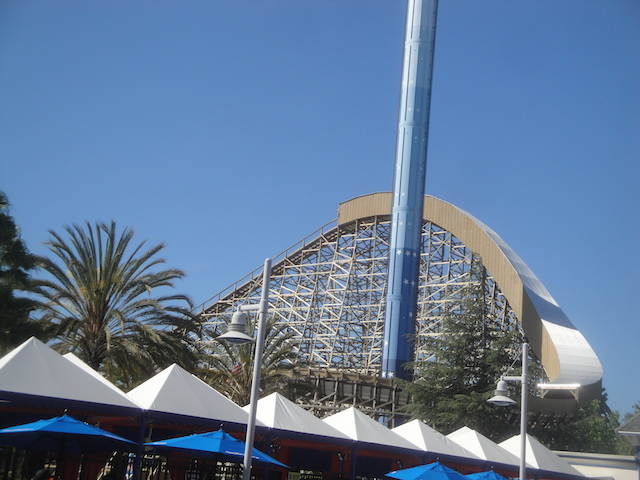
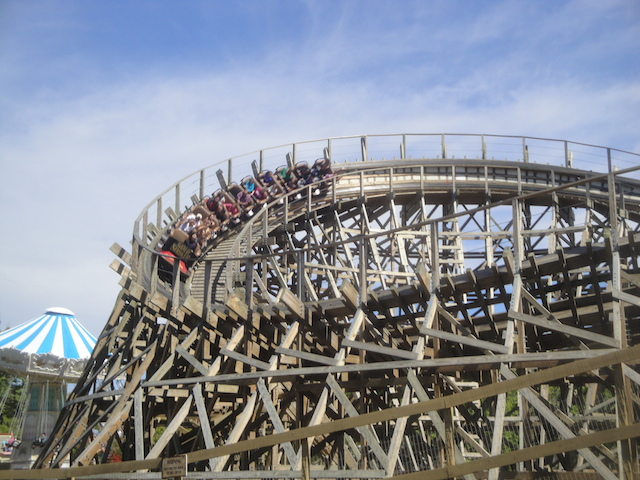
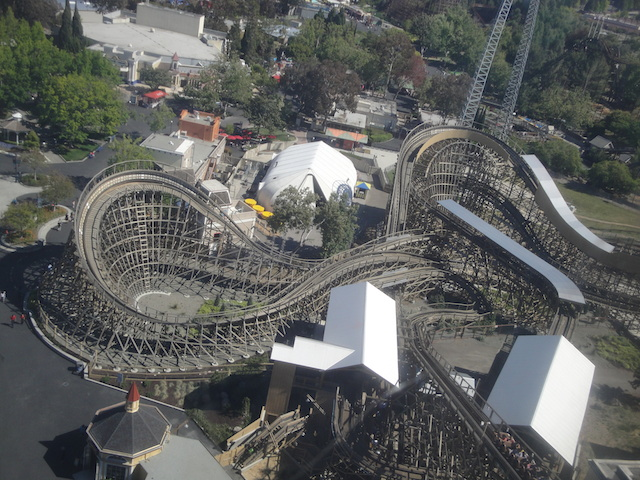
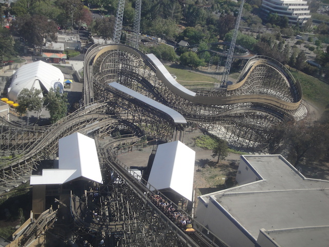
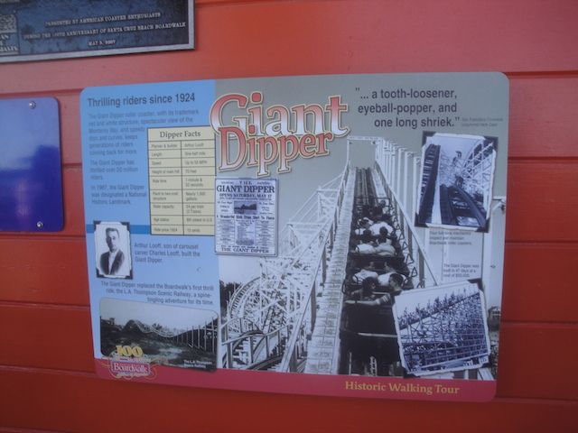

| |
California's Great America 2015
All right. Time for another update. And it's time for a fairly large update. For a while now, I've been saying that I need to get up to Northern California and do a Nor-Cal trip. However, that trip got postponed and postponed until eventually, I just decided to split the initial trip into multiple day trips. I already had gone to Six Flags Discovory Kingdom back at Christmas Time for Superman: Ultimate Flight. And now today, I'm off at California's Great America to get on Gold Striker.
 It's about damn time I got on this GCI.
It's about damn time I got on this GCI.
 I am happy to say that this ride exceeded my expectations and is my new favorite GCI.
I am happy to say that this ride exceeded my expectations and is my new favorite GCI.
 Yes. This ride is better than the almighty Prowler. Suck it!! =P
Yes. This ride is better than the almighty Prowler. Suck it!! =P

That covered first drop may be small, but man does it give riders just a TON of speed.

And yeah. Gold Striker is just a GREAT GCI. It's fast, has lots of laterals and changes in directions, and even a couple good pops of airtime. It just runs like a bat out of hell and is a fantastic ride. Easily the best wooden coaster in all of California. =)
Ooh. Look at the pretty fountain.
All right. Let's move onto the other great ride in the park. Top Gun. Let's marathon!!
 Hey, I may not be a fan of the cherry red color scheme, but it's still one of the stronger and better B&M Inverts, packing a powerful punch to this day.
Hey, I may not be a fan of the cherry red color scheme, but it's still one of the stronger and better B&M Inverts, packing a powerful punch to this day.
Ooh. Ariel view of Top Gun. =)
Flyers + Windy Day = A lot of fun.
Surprisingly, the enterprise here was actually run really well.
Rode this Top Spin at Geauga Lake and it sucked there. What would make it better here?
Is it me or did this frisbee get much weaker over the years?
The only credit in the park I don't have. And knowing the restrictions, it's going to remain that way. I may be a whore, but I'm not THAT big a whore.
Am I the only weirded out that they used red for being OK to ride and blue for being too small. I just feel like they don't understand basic color psycology here. Even kindergardeners know that red means stop and green means go.
Still a big fan of these Intamin 2nd Generation Drop Towers.
 Did you seriously think that I would ride something that's been in my Top 10 Worst Coasters List for years now? No! F*ck Grizzly!
Did you seriously think that I would ride something that's been in my Top 10 Worst Coasters List for years now? No! F*ck Grizzly!
Well, at least Demon was running really well. Much smoother and faster than I initially remembered.
Congrats on 40 seasons.
 Hmm. What haven't we ridden yet? Oh yeah. Vortex.
Hmm. What haven't we ridden yet? Oh yeah. Vortex.
Did somebody say that the line for Vortex in the middle of the day was hell? =)
 It may be my least favorite B&M, but I still enjoy it to a certain extent.
It may be my least favorite B&M, but I still enjoy it to a certain extent.
 "Hey! Let's go ride Inverti--Oh F*ck!!"
"Hey! Let's go ride Inverti--Oh F*ck!!"
HELL NO!!! NOT WORTH THE WAIT!!!
Yeah. I think the park is littered with a ton of small kids cause all the thrill rides are walk ons, but the family rides all have ridicolous waits.

All right. Let's get some more Gold Striker rides! =)

I love this ride. I really do.
Crap. Gold Strikers 10-7. We won't be able to ride it for a while.
Well, we did everything we wanted at California's Great America. So we decided to head on over to the Santa Cruz Beach Boardwalk cause just like all the other Nor-Cal parks, it had new credits for me to get and I was overdue for them.
Damn. California's Great America may have been relatively empty (at least at the rides worth riding), the Santa Cruz Beach Boardwalk is PACKED!!!
 Hey, it may not be as good as Gold Striker this morning, but I still really like the Santa Cruz Giant Dipper.
Hey, it may not be as good as Gold Striker this morning, but I still really like the Santa Cruz Giant Dipper.

Yep. The Santa Cruz Giant Dipper has a real impressive history and I'm happy it's been standing all this time.
 All right. Now it's time for another new credit.
All right. Now it's time for another new credit.
Maybe I just hit it on a bad day, but this thing BARELY spun. AT ALL!!!
 Oh well, I'll be riding Spider, which is a much better clone of this in a month. So hey. It's all good. =)
Oh well, I'll be riding Spider, which is a much better clone of this in a month. So hey. It's all good. =)
 Oh boy!! You know what this means!?
Oh boy!! You know what this means!?
Yep. After multiple visits and always being closed, I'm finally able to get this damn kiddy credit. And to be fair, it's one of the better kiddy coasters.
 We still have 4 tickets left, enough to get a ride on the Rock O Plane, which can I say was running fantastic. =)
We still have 4 tickets left, enough to get a ride on the Rock O Plane, which can I say was running fantastic. =)
Why is it that I didn't see any Texas Doughnuts back when I was in Texas?
Hey. I've never looked inside their arcade. And I must say, I really like the look of this place.
On our way out, some random dude came up to us and gave us both free ash trays. This is completely useless since neither of us smoke, but...thanks. I guess.
And that was our Nor-Cal day. I was greatly impressed with this day and that I not only knocked Gold Striker out of the way and struck gold with that, but also cleaned up the Santa Cruz Beach Boardwalk and got all that I needed there. Seriously, all I need is Gilroy Gardens and I'll be done with Northern California. I had a blast and really enjoyed both California's Great America and the Santa Cruz Beach Boardwalk and am hoping to have much more fun up in Northern California.
Home
|